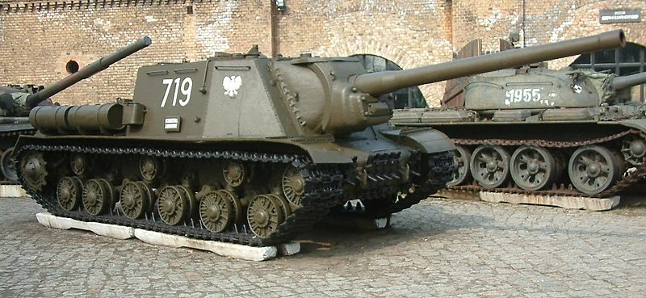

A tank destroyer, tank hunter, tank killer, or self-propelled anti-tank gun is a type of armoured fighting vehicle, armed with a direct-fire artillery gun or missile launcher, designed specifically to engage and destroy enemy tanks, often with limited operational capacities.While tanks are designed for front-line combat, combining operational mobility and tactical offensive and defensive capabilities and performing all primary tasks of the armoured troops, the tank destroyer is specifically designed to take on enemy tanks and other armoured fighting vehicles.Many are based on a tracked tank chassis, while others are wheeled.Since World War II, gun-armed powerful tank destroyers have fallen out of favor as armies have favored multirole main battle tanks. However, lightly armored anti-tank guided missile (ATGM) carriers are commonly used for supplementary long-range anti-tank work. The resurgence of expeditionary warfare in the first two decades of the 21st century has seen the emergence of gun-armed wheeled vehicles, sometimes called protected gun systems, which may bear a superficial resemblance to tank destroyers, but are employed as direct fire support units typically providing support in low-intensity operations such as the wars in Iraq and Afghanistan.
ISU-122 Tank Destroyer
Soviet Union
As with the Germans of 1943, most of the Soviet designs mounted anti-tank guns, with limited traverse in casemate-style turretless hulls, in a general design format looking much like the Germans' own Jagdpanzer vehicles. The results were smaller, lighter, and simpler to build weapons that could carry larger guns than any contemporary tank, including the King Tiger. The Soviets produced high numbers of the 85 mm SU-85 and 100 mm SU-100 self-propelled guns based on the same chassis as the T-34 medium tank; the heavier-duty powertrain and hull of the IS-2 heavy tank were instead used to produce the heavier-hitting 122 mm-armed ISU-122 and 152 mm-armed ISU-152, both of which had impressive anti-tank capabilities earning each of them the Russian nickname Zveroboy ("beast killer") for their ability to destroy German Tigers, Panthers and Elefants. The predecessor of the ISU 152 was the SU-152, built on the KV-1s chassis and shared many similarities (including its gun) with the ISU-152. The ISU-152 built as a heavy assault gun, relied on the weight of the shell fired from its M-1937/43 howitzer to defeat tanks. In 1943, the Soviets also shifted all production of light tanks like the T-70 to much simpler and better-armed SU-76 self-propelled guns, which used the same drive train. The SU-76 was originally designed as an anti-tank vehicle, but was soon relegated to the infantry-support role.
read more...